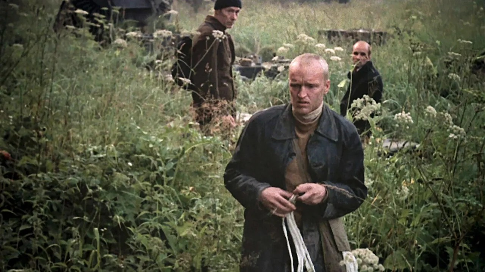
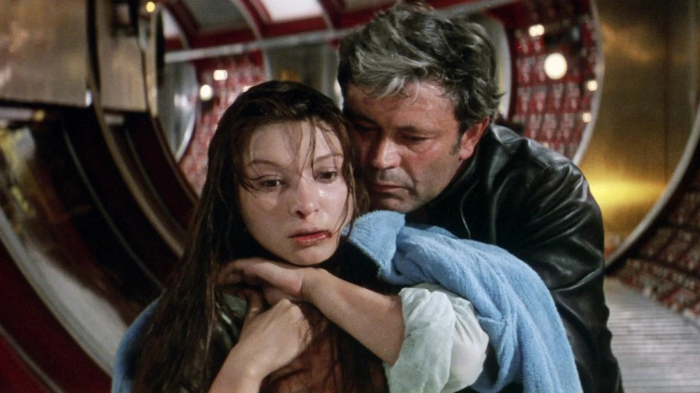
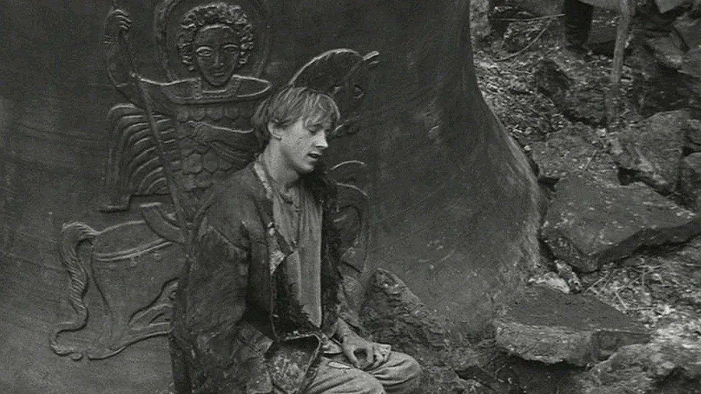
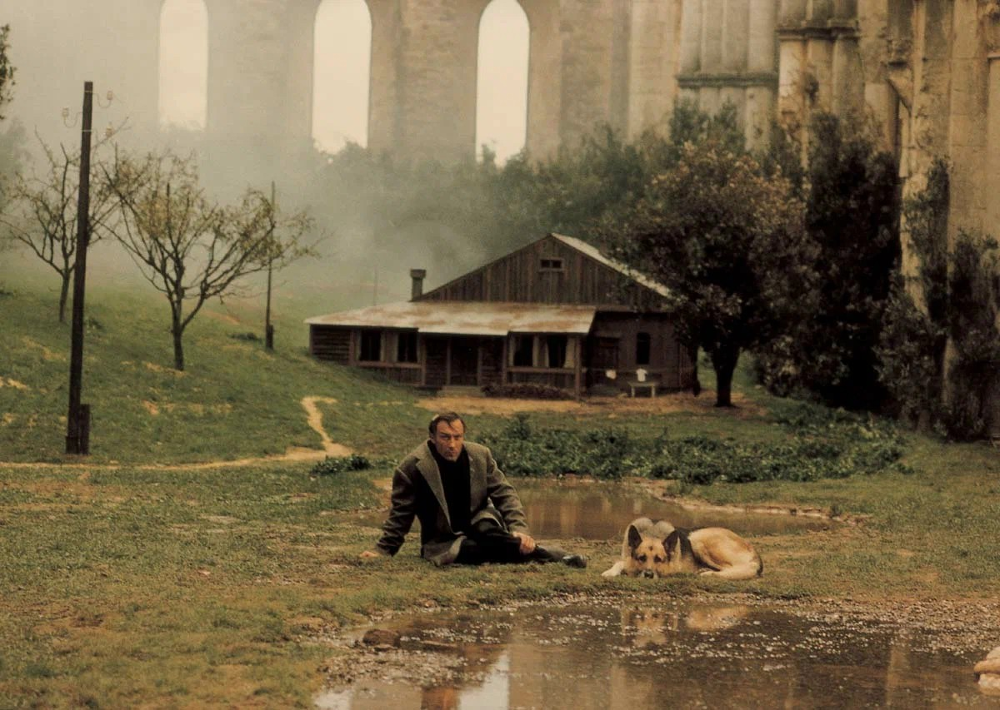

Андрей Тарковский
04.04.1932 - 29.12.1986
Завражье, РСФСР, СССР
Андрей Тарковский родился в 1932 году в селе Завражье Ивановской области в семье поэта Арсения Тарковского и актрисы Марии Вишняковой.
Родители развелись, когда ему было три года. Он учился в Институте востоковедения, затем во ВГИКе у Михаила Ромма.
Был женат дважды, второй раз — на актрисе Ларисе Егоровой-Тарковской, которая стала его главным помощником. У него двое детей.
Тарковский — главный классик авторского кино и мастер метафизического реализма.
Его почерк: длинные медитативные кадры, замедленный ритм, «скульптура из времени» (его собственное определение), льющийся дождь, ветер в полях,
парящие предметы и «зоны» — пограничные пространства, меняющие человека. Снимал в жанрах философской притчи, психологической драмы и
научно-фантастической поэмы (без зрелищности, но с глубокими смыслами).
Известные фильмы

Жертвоприношение
1986 год

Сталкер
1979 год

Солярис
1972 год

Андрей Рублев
1966 год

Зеркало
1974 год

Ностальгия
1983 год
Награды

Каннский кинофестиваль
10 побед
3 номинации